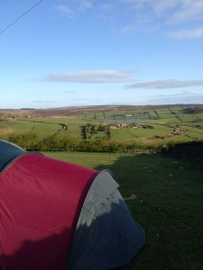

My thanks to Helen Daykin, @Dughall, and Bill Lord for organizing such a splendid event and to everyone that attended it.
CampEd all the fun and laughter you need.
Read about CampEd12 and Plan to attend CampEd13
Related articles by other folks..
http://drbadgr.wordpress.com/2012/05/06/science-at-camped12/ http://alexbellars.wordpress.com/2012/05/08/camped12/
Image courtesy of Dughall